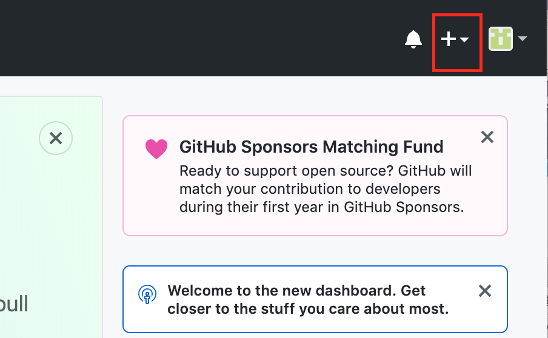

GitHubのページ
アカウント名とパスワードを決めて、jindaiメールアドレスにて認証メールを受け取る。
最初に人間かどうかの試験を受けさせられる。１つ１つは大した問題ではないが10回答えさせられたので煩わしい。
 私の場合はサイコロがもっと多く3個以上で14になるペアを探す問題だった。
私の場合はサイコロがもっと多く3個以上で14になるペアを探す問題だった。
アクセストークンを獲得する。settingからdeveroper settingsを選択し、トークンを獲得した。
アクセストークンはこの時にしか見ることができないため私はiphoneのメモ帳に保存してある。
ターミナルで下記のコマンドを入力しEnterを押し、gitをインストールします。
brew install git
finderにmygitという名前でフォルダを作成した。そこに先生のdoyolabのコピーも入っている
githubの右上にある+マークをクリックし、New Repositoryをクリックし、新しいリポジトリーを作ります。

下記の画像を参考にdoyolabというリポジトリーを作成します。

リポジトリーのSettingsから下記の設定をします。

githubのdoyolabというリポジトリーの中で下記のボタンを押し、リポジトリーのURLをコピーします。

ターミナルを開いて、下記のコマンドでmygitフォルダに移動します。cdはchange directoryの略です
cd mygit
ターミナルで下記のコマンドを入力し、クローンを作成してください。(URLは上でコピーしたURLです。)
git clone リポジトリのURL
mygitの中にdoyolabというフォルダができて、doyolabフォルダの中にREADME.mdファイルが入っていれば成功です。
htmlファイルを作って、doyolabフォルダに入れ、下記の手順でgithubへアップロードできます。
cd mygit/doyolab
(これを使えば一回で移動することができる）
git add .
git commit -m"メッセージ"
（毎回変えた方がいいらしい）
git push
（反映には1分ほどかかるので注意）
←コードを使用したときのスクショを載せたのですが画像が出てきませんでした。googledriveで画像のアドレスを作成したができなかった。
今このページを作っているものこそがhtmlだという
リンクを作成する
→< a href="参照するリンク先のＵＲＬ">リンクにつけたい名前< /a >
このように 商品の購入はこちらから 使われる
画像を差し込む
→＜img src="載せたい画像のファイル名"＞
このように